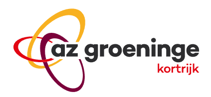

84 dagen. Dag per dag. Met een motivatiequote, wetenschappelijk bewijs en inzicht in wat je bespaart. Jij kan dit.
Zo berekenen we hoeveel je bespaart. Dit wordt nergens naartoe gestuurd — enkel op jouw gsm opgeslagen.